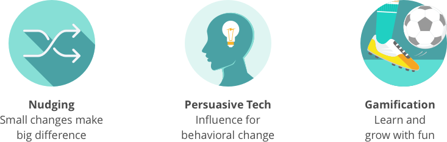
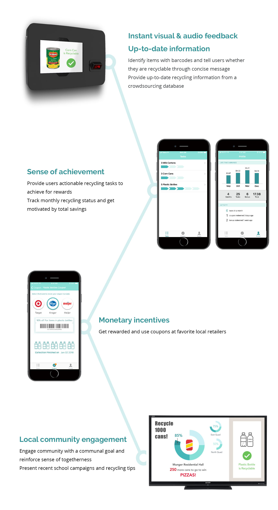

HomieCycle
A ubiquitous design concept to nudge sustainable behavioral change in campus housing
UX Design

Project Type
2018 CHI Design Challenge
Group Project
Duration
Fall 2017 (4 months)
Role
UX Designer
Skills
Wireframing, Prototyping
Survey, Usability Testing
Interview, Observation
The Challenge
ENGAGE FOR BEHAVIORAL CHANGE
Promoting recycling rate on campus has long been a challenge for schools. With students coming and leaving, the impact of recycling campaigns lasts shorter and becomes hard to evaluate.
People don't know what can be recycled
People have no motivation to recycle
There are too many signage that confuses people even more
introduction
SOLUTION AT A GLANCE
Design Process
FUNNEL BIG THINKING TO DELICATE DESIGN
Research
BUILD THE PUZZLE FROM ABSTRACT TO CONCRETE
SURVEY
We collected survey responses from over 100 students to understand self-reported recycling behaviors and environmental awareness. Our analysis reveals three major factors that prevent people from recycling and major reasons for them doing recycling.
25%
respondents lack correct recycling knowledge
27%
respondents consider recycling inconvenient
36%
respondents think finding recycle bins is not easy
OBSERVATION
We observed the sporadic tasks of people getting rid of their waste to understand real recycling behaviors in natural settings. We then aggregated our notes for several main findings.
- Tossing trash happened in a split second
- People did not spend time reading the signage carefully
- People threw away their lunch bag without separating the recyclables
STAKEHOLDER INTERVIEW
To understand the attempts the university has made and challenges they encountered to improve recycling rate, we carried out interviews with staff members at campus sustainability office.
“I think one of our biggest challenges is developing that internal motivation in people to actually recycle. If people are motivated to do it, you will do it. And getting that motivation is challenging. It’s challenging i think for any behavioral change. We are not alone in that.”
--Tracy Artley, Office of Campus Sustainability
NARROW DOWN THE SCOPE & INSPIRE DESIGN
Based on the findings, we then funneled our scope into student residents at campus housing to consider a solution that can motivate behavioral change from an achievable scale and of similar user demographics. We consulted previous literature to inspire our design, and there are three main concepts that inspire our design to engage people for behavioral change.
Ideation
BRAINSTORM & STORYBOARD
We brainstormed for around 50 solution proposals within an hour period. We then rated our solutions based on a list of criteria to find out the top scorers. We developed storyboards to represent the task flow of interactions.
PROTOTYPE & USER TESTING
We made physical prototypes and created digital interface with Sketch and inVision. We then conducted test sessions with Wizard-of-Oz method (i.e. imitate real system responses by manual operations). We observed how users interacted with prototypes in a given scenario and collected feedbacks to refine our design.
FINAL DESIGN
Introducing HomieCycle
HomieCycle, is a recycling education service consisting of a barcode scanner, a mobile app, and the public display. It provides an interactive and socially-engaging solution to the long existing challenge of improving recycling behaviors.
DESIGN FEATURES
IMPACT
Leveraging the power of community and monetary incentives by completing recycling tasks, we hope HomieCycle to raise the environmental awareness starting from the campus population, improve the correct recycling behaviors, and bring together the community for a sustainable campus.
TAKEAWAY
LEARN FROM FEEDBACK, BOLD TO ITERATE
Recycling is a well-researched yet developing topic. Learning from different stakeholders, we can identify gaps from previous attempts and brainstorm for ideas that can alleviate users’ pain points. Deciding the appropriate touch point I think is the most interesting part of this project, because recycling is what we do in our daily routines and people will hardly pull out their devices to check on it. This finding ushered us to make a big change to the original design in the later prototyping phase, and iterate the design again from storyboards. We learn that without collecting feedback from different stakeholders, we wouldn’t know how the design would fit into current landscape. Eventually, we landed on a ubiquitous design concept that strives to blend into our everyday life.